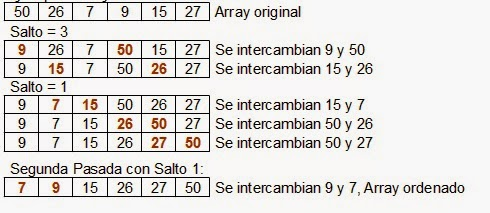

Estructuras
Definicion
Tipo de dato compuesto que puede almacenar distintos tipos de datos
Sintaxis
struct [nombre_estructura] {
[tipo][miembro1]
[tipo][miembro2]
[tipo][miembro3]
}[NombreVariable];
struct: es una palabra reservada de C que indica que los elementos que vienen agrupados a continuación entre llaves componen una estructura.
nombre_estructura: identifica el tipo de dato que se describe y del cual se podrán declarar variables. Se especifica entre corchetes para indicar su opcionalidad.
miembro1, miembro2,...: Son los elementos que componen la estructura de datos, deben ser precedidos por el tipo_dato al cual pertenecen.
Ejemplo
struct Persona {
char Nombre[65];
char Direccion[65];
int AnyoNacimiento;
} Fulanito;
Ejemplo de programa
#include "stdio.h"
#include "stdlib.h"
/* run this program using the console pauser or add your own getch, system("pause") or input loop */
struct persona{
char nom[50];
int edad;
char sexo;
} p;
void capturar(){
printf("Ingresa el nombre\n");
gets(p.nom);
printf("Ingresa la edad\n");
scanf("%i", &p.edad);
printf("Ingresa el sexo\n");
fflush(stdin);
scanf("%c", &p.sexo);
}
void imprimir(){
printf("Nombre: %s\n", p.nom);
printf("Edad: %i\n", p.edad);
printf("Sexo: %c\n", p.sexo);
}
int main(int argc, char *argv[]) {
capturar();
imprimir();
system("PAUSE");
}
sfdsdf
Uniones
Definicion
Una union es un tipo de datos derivado, como una estructura, con miembros
que comparten el mismo espacio de almacenamiento.
Una variable de tipo union puede contener (en momentos diferentes) objetos
de diferentes tipos y tamaños.
Las uniones proporcionan una forma de manipular diferentes clases de datos
dentro de una sola ´area de almacenamiento.
En cualquier momento una union puede contener un máximo de un objeto
debido.
Sintaxis
Una union se declara con el mismo formato de una struct. Primero declaramos
el tipo union y luego declaramos variables de ese tipo.
union [nombre_de_la_union] {
[tipo][miembro1]
[tipo][miembro2]
[tipo][miembro3]
}[NombreVariable];
Ejemplo
union Valores{
int ival;
float fval;
float sval;
};
Ejemplo de programa
#include "stdio.h"
#include "string.h"
/*Creamos una union*/
union frases
{
char mensajes[50];
char ayudas[50];
char lineas[50];
} palabra;
/*Creamos una estructura*/
struct comparte
{
char mensajes[50];
char ayudas[50];
char lineas[50];
}Sistema;
/*Nótese que la estructura y la union tienen los mismos tipos de datos*/
int main(int argc, char** argv)
{
/*Inicializamos*/
strcpy(palabra.mensajes, "Primer Mensaje");
/*Inicializamos*/
strcpy(palabra.ayudas, "Una Ayuda");
printf("\nFrases en Union: ");
/*Imprimimos mensajes de union*/
printf("\n1- %s", palabra.mensajes);
/*Imprimimos ayudas de union*/
printf("\n2- %s", palabra.ayudas);
/*Inicializamos*/
strcpy(Sistema.mensajes, "Primer Mensaje");
/*Inicializamos*/
strcpy(Sistema.ayudas, "Una Ayuda");
/* Podemos notar que aunque inicializamos los valores
* al imprimir se tiene el mismo valor para cada miembro
* de la estructura, esto se debe a que las uniones usan el
* mismo espacio de memoria para todos los elementos
* de la union, siendo del tamaño de su miembro de
* mayor tamaño, en este caso 50 bytes.
* Entonces los tres miembros creados dentro de la
* union comparten esos 50 bytes.
* Entonces el ultimo valor agregado a la union es
* el que se tiene.
*/
printf("\n\nFrases en Struct: ");
/*Imprimimos mensajes de struct*/
printf("\n1- %s", Sistema.mensajes);
/*Imprimimos ayudas de union*/
printf("\n2- %s", Sistema.ayudas);
/* En la estructura comparte, se reservan 150 bytes
* de memoria para los tres miembros, en este caso
* cada uno es independiente en memoria, asi pues se
* puede inicializar cada uno o usar como un campo
* independiente.
*/
return 0;
}
sfdsdf
Métodos de ordenamiento.
Burbuja.
Es un sencillo algoritmo de ordenamiento. Funciona revisando cada elemento de la lista que va a ser ordenada con el siguiente, intercambiándolos de posición si están en el orden equivocado. Es necesario revisar varias veces toda la lista hasta que no se necesiten más intercambios, lo cual significa que la lista está ordenada. Este algoritmo obtiene su nombre de la forma con la que suben por la lista los elementos durante los intercambios, como si fueran pequeñas "burbujas". También es conocido como el método del intercambio directo. Dado que solo usa comparaciones para operar elementos, se lo considera un algoritmo de comparación, siendo uno de los más sencillo de implementar.
Inserción
Inicialmente se tiene un solo elemento, que obviamente es un conjunto ordenado. Después, cuando hay k elementos ordenados de menor a mayor, se toma el elemento k+1 y se compara con todos los elementos ya ordenados, deteniéndose cuando se encuentra un elemento menor (todos los elementos mayores han sido desplazados una posición a la derecha) o cuando ya no se encuentran elementos (todos los elementos fueron desplazados y este es el más pequeño). En este punto se inserta el elemento k+1 debiendo desplazarse los demás elementos.
Selección
1.Buscar el mínimo elemento de la lista
2.Intercambiarlo con el primero
3.Buscar el siguiente mínimo en el resto de la lista
4.Intercambiarlo con el segundo
Y en general:
-Buscar el mínimo elemento entre una posición i y el final de la lista
-Intercambiar el mínimo con el elemento de la posición i
Shell
El algoritmo Shell es una mejora de la ordenación por inserción, donde se van comparando elementos distantes, al tiempo que se los intercambian si corresponde. A medida que se aumentan los pasos, el tamaño de los saltos disminuye; por esto mismo, es útil tanto como si los datos desordenados se encuentran cercanos, o lejanos.
Es bastante adecuado para ordenar listas de tamaño moderado, debido a que su velocidad es aceptable y su codificación es bastante sencilla. Su velocidad depende de la secuencia de valores con los cuales trabaja, ordenándolos.El siguiente ejemplo muestra el proceso de forma gráfica:
Considerando un valor pequeño que está inicialmente almacenado en el final del vector. Usando un ordenamiento O(n2) como el ordenamiento de burbuja o el ordenamiento por inserción, tomará aproximadamente n comparaciones e intercambios para mover este valor hacia el otro extremo del vector.
El Shell sort primero mueve los valores usando tamaños de espacio gigantes, de manera que un valor pequeño se moverá bastantes posiciones hacia su posición final, con sólo unas pocas comparaciones e intercambios.

sfdsdf
Listas enlazadas
Definicion
Una lista enlazada es una de las estructuras de datos fundamentales, y puede ser usada para implementar otras estructuras de datos. Consiste en una secuencia de nodos, en los que se guardan campos de datos arbitrarios y una o dos referencias, enlaces o punteros al nodo anterior o posterior. El principal beneficio de las listas enlazadas respecto a los vectores convencionales es que el orden de los elementos enlazados puede ser diferente al orden de almacenamiento en la memoria o el disco, permitiendo que el orden de recorrido de la lista sea diferente al de almacenamiento.
Tipos de listas enlazadas
Listas simples enlazadas
Es una lista enlazada de nodos, donde cada nodo tiene un único campo de enlace. Una variable de referencia contiene una referencia al primer nodo, cada nodo (excepto el último) enlaza con el nodo siguiente, y el enlace del último nodo contiene NULL para indicar el final de la lista. Aunque normalmente a la variable de referencia se la suele llamar top, se le podría llamar como se desee.
Listas doblemente enlazadas
Un tipo de lista enlazada más sofisticado es la lista doblemente enlazada o lista enlazadas de dos vías. Cada nodo tiene dos enlaces: uno apunta al nodo anterior, o apunta al valor NULL si es el primer nodo; y otro que apunta al nodo siguiente, o apunta al valor NULL si es el último nodo.
En algún lenguaje de muy bajo nivel, XOR-Linking ofrece una vía para implementar listas doblemente enlazadas, usando una sola palabra para ambos enlaces, aunque esta técnica no se suele utilizar.
Listas enlazadas circulares
En una lista enlazada circular, el primer y el último nodo están unidos juntos. Esto se puede hacer tanto para listas enlazadas simples como para las doblemente enlazadas. Para recorrer una lista enlazada circular podemos empezar por cualquier nodo y seguir la lista en cualquier dirección hasta que se regrese hasta el nodo original. Desde otro punto de vista, las listas enlazadas circulares pueden ser vistas como listas sin comienzo ni fin. Este tipo de listas es el más usado para dirigir buffers para “ingerir” datos, y para visitar todos los nodos de una lista a partir de uno dado.
Listas enlazadas simples circulares
Cada nodo tiene un enlace, similar al de las listas enlazadas simples, excepto que el siguiente nodo del último apunta al primero. Como en una lista enlazada simple, los nuevos nodos pueden ser solo eficientemente insertados después de uno que ya tengamos referenciado. Por esta razón, es usual quedarse con una referencia solamente al último elemento en una lista enlazada circular simple, esto nos permite rápidas inserciones al principio, y también permite accesos al primer nodo desde el puntero del último nodo.
Listas enlazadas doblemente circulares
En una lista enlazada doblemente circular, cada nodo tiene dos enlaces, similares a los de la lista doblemente enlazada, excepto que el enlace anterior del primer nodo apunta al último y el enlace siguiente del último nodo, apunta al primero. Como en una lista doblemente enlazada, las inserciones y eliminaciones pueden ser hechas desde cualquier punto con acceso a algún nodo cercano. Aunque estructuralmente una lista circular doblemente enlazada no tiene ni principio ni fin, un puntero de acceso externo puede establecer el nodo apuntado que está en la cabeza o al nodo cola, y así mantener el orden tan bien como en una lista doblemente enlazada.